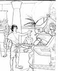

ه پیل کې...
د انجیل د لومړي کتاب نوم، پیدایښت، د پیل معنی لري. د پیدایښت لومړی دوه فصلونه موږ ته وایی چې خدای کائنات پیدا کړی: ستوری، ځمکه او نورې ټولې سیارې، او هر ژوندی موجود چې دی یا تل وو. د خدای تر ټولو ځانګړی مخلوق انسان و: خلک. خلک ځانګړي دي ځکه چې دوی د خدای په خپل عکس کې رامینځته شوي. (پیدایش 1: 26-27 وګورئ)

دم او حوا
د پیدایښت دریم څپرکی د دې کیسه بیانوي چې ګناه څنګه نړۍ ته ننوتله. آدم او حوا، لومړی سړی او لومړۍ ښځه، په دې باور وه چې خدای دوی ته دروغ ویلي. په دې دروغ باور کول، دوی بیا په دې قانع شول چې دوی واقعیا د خدای په څیر کیدی شي. کله چې خدای ولیدل چې دوی نافرماني شوي دي، آدم او حوا نور د هغه سره د هغه ښکاره اړیکو څخه خوند وانخست چې مخکې یې درلود. ګناه دوی له خدای څخه جلا کړي وو. او همداسې دا د هر چا لپاره و، پرته له یو چا، چې له هغه وخت راهیسې ژوند کوي: موږ ټول د ګناه په واسطه له خدای څخه جلا شوي یو.

د پیدایښت څلورم او پنځم فصلونه د انسانانو د مخ په زیاتیدونکي بدۍ غمجنې کیسه ته دوام ورکوي. خدای لا تر اوسه موږ ته د سم ژوند کولو لپاره خپل حکمونه نه دي راکړي، او خلکو هغه ډول چلند کاوه چې دوی یې خوښوي. ټول تمدن په هر ډول تاوتریخوالی او بې حیایۍ پورې تړلی بریښي. د خپل لوړ مخلوق د افسوس حالت په لیدو سره خدای پښیمانه شو چې هغه مخلوقات د داسې چلند وړ کړي دي.

نوح
لکه څنګه چې خدای خپل ګناهکار مخلوق ته په ټیټه سترګه وکتل، هغه یو سړی وموند چې د څښتن سره روان و: نوح. خدای پریکړه کړې وه چې انسانان له مینځه یوسي او د نوح او د هغه د کورنۍ سره بیا پیل وکړي. د پیدایښت شپږم څخه تر اتم فصلونو کې ویل کیږي چې څنګه خدای ټول انسانان په سیلاب سره تباه کړل، یوازې نوح او د هغه میرمن او د دوی درې زامن او میرمن یې وژغورل.د پیدایښت له نهم څخه تر یوولسو فصلونو پورې موږ ته کیسه راکوي چې څنګه ځمکه د نوح د زامنو، شیم، حم او یافیت لخوا د سیلاب وروسته آباده شوه. د یوولسم څپرکي په پای کې، موږ یو ډیر ځانګړي سړي ته معرفي کوو، یو سړی چې خدای به د هغه خلکو پلار وي چې هغه کولی شي خپل ځان ووایي.


ابراهیم
په پیدایښت کې، انجیل موږ ته د یو شمیر خلکو په اړه وايي چې "د خدای سره روان وو،" لکه نوح. د خدای سره تګ باور ته اړتیا لري: یو بې بنسټه باور چې خدای به هغه څه وکړي چې هغه یې ژمنه کوي. دا د نوح لپاره لوی باور و چې باور یې وکړ چې خدای به د ځمکې ټول نفوس په سیلاب سره له مینځه یوسي او د کښتۍ (لوی کښتۍ) د جوړولو لپاره د خدای لارښوونې تعقیب کړي، کله چې د هغه شاوخوا ټول خلک د هغه د کار کولو په وخت کې د هغه ملنډې وهلې. په دولسم پیدایښت کې، موږ د یو بل سړي په اړه زده کوو چې خدای به ډیر باور ته اړتیا ولري: ابراهیم.
خدای د ابراهیم څخه ډیره غوښتنه وکړه (خدای وروسته خپل نوم ابراهیم ته بدل کړ): هغه له ابراهیم څخه وغوښتل چې خپل وطن پریږدي او داسې ځای ته لاړ شي چې هیڅکله یې نه و لیدلی، چیرته چې هغه هیڅوک نه پیژني. د هغه د اطاعت لپاره، خدای ابراهیم ته دوه ژمنې وکړې:
- دا چې هغه به د کنعان ځمکه (هغه څه چې موږ یې اوس اسراییل بولو) ابراهیم او د هغه اولاد ته ورکړي
- دا چې د ابراهیم له اولادې څخه به یو لوی قوم راشي
د ابراهیم په ذهن کې، دا دواړه ژمنې باید دوی سره ستونزې ولري. د کنعان ځمکه لا دمخه د څو نورو خلکو پورې اړه درلوده، او ابراهیم او د هغه میرمن هیڅ اولاد نه درلود. او د ابراهیم ښځه، ساره، د ماشومانو د درلودلو لپاره ډیره بوډا وه. حتی، ابراهیم باور درلود، او له دې امله هغه او د هغه ټول کورنۍ کنعان ته لاړ.
که تاسو د پیدایښت په 12-23 فصلونو کې د ابراهیم کیسه ولولئ، تاسو به وګورئ چې د ابراهیم باور کامل نه و: هغه کله ناکله "موضوعات په خپل ځان کې اخیستي.
لاسونه، نه د خدای او د هغه وخت ته انتظار کول. بیا هم، موږ د پیدایښت په 15: 6 کې لوستل، "ابرام په څښتن باور وکړ، او هغه یې هغه ته د صداقت په توګه اعتبار ورکړ."

حتی کله چې دا اسانه نه وي، حتی کله چې موږ لاره نه وینو، خدای له موږ څخه غوښتنه کوي چې په هغه باور ولرو.
لکه څنګه چې خدای ژمنه کړې وه، ساره یو زوی لري. هغې او ابراهیم ورته اسحاق نوم ورکړ. ساره د ماشوم په درلودلو خوشحاله وه، حتی په خپل زوړ عمر کې.
یعقوب دولس زامن درلودل (تاسو کولی شئ د دوی د نومونو لیست په پیدایش 35: 23-26 کې وګورئ). د دې زامنو نومونه به د اسراییلو د دولسو قبیلو نومونه وي. (خدای په حقیقت کې د یعقوب نوم اسراییل ته بدل کړ - پیدایښت 35:10.) د دې دولسو زامنو په واسطه، خدای د ابراهیم سره خپله ژمنه پوره کړه چې له هغه څخه د خلکو لوی قوم جوړوي.
موسی
د یعقوب یو زوی، یوسف، مصر ته لاړ او د فرعون په محکمه کې یو لوی افسر شو (تاسو د دې په اړه د پیدایښت په 37-50 کې لوستلی شئ؛ دا یوه اوږده کیسه ده، مګر خورا یو جرات دی). په پای کې، د یوسف ټول یوولس وروڼه هم مصر ته لاړل. تر هغه چې یوسف ژوندی و، د هغه کورنۍ د فرعون سره د هغه د اړیکو له امله ښه ژوند کاوه.
د یوسف له مړینې وروسته، نور نسلونه پیدا شول، او یو نوی فرعون په واک کې راغی چې نه پوهیده چې یوسف د شاهي کورنۍ لخوا خوښ شوی و. دې نوي فرعون وليدل چې د يهودانو (اسراييلو ته د يهوديانو يا يهوديانو په نوم هم يادېدل) په شمېر کې ډېر زيات شوي دي. دا هغه ویره پیدا کړه چې دوی به د هغه حکومت وګرځوي، نو هغه په مصر کې ټول اسراییل (یهود) غلامان کړل.

په خروج 2: 23 کې، انجیل موږ ته وایي چې اسراییلو د مصر د غلامانو په توګه خورا ډیر ځورول. هغوی خدای ته فریاد وکړ چې دوی وژغوري، او خدای د دوی اوریدل. هغه د یهودانو څخه یو سړی غوره کړ چې د اسراییلو د غلامۍ څخه خلاصولو کې مرسته وکړي. د هغه سړي نوم موسی و.
د ابراهیم برعکس، چې د خدای غوښتنې ته یې غوږ نیولی و، موسی په لومړي سر کې هڅه وکړه چې څښتن د بل چا څخه کار واخلي. (خروج 4: 1-14) خدای موسی ته وښودله چې دا به خدای وي، نه موسی، چې په حقیقت کې به د فرعون لاس مجبور کړي چې د یهودي غلامان آزاد کړي. موسی به یوازې د خدای رسول وي.
په مصر کې، دوی د ډیرو خدایانو عبادت کاوه - بتونه - نه د ابراهیم، اسحاق او یعقوب خدای. کله چې موسی لومړی هغه ته نږدې شو (خروج 5)، فرعون په خندا وویل: "څوک دی چې زه د هغه اطاعت وکړم؟"
موسی د دویمې غوښتنې سره فرعون ته راستون شو چې فرعون یهودي غلامان خوشې کړي. په هرصورت، دا ځل، موسی له ځان سره د خدای لخوا یو خبرداری راوړی: که فرعون د اسراییلو د آزادولو سره موافقه ونه کړي، خدای به په مصر کې د نهو آفتونو لړۍ خپره کړي: د ویجاړتیا، ناروغۍ او تیاره. د حیرانتیا خبره دا ده چې حتی د دې آفتونو له وحشتناکو اغیزو وروسته هم فرعون د خدای په قدرت باور نه درلود او یهودیان به یې آزاد نه کړل. (خروج 7:15 - 11 خروج)
دا یوازې د لسم طاعون (خروج 12) وروسته و چې فرعون په پای کې د خوشې کولو موافقه وکړه. د مصر غلامان. د مصر د هرې کورنۍ لومړی زیږیدلی زوی به ووژل شي. په هرصورت، خدای به د یهودانو لومړي زیږیدلي زامن وژغوري. هغه دوی ته لارښوونه وکړه چې یو پسه قرباني کړي او د خپلو کورونو په دروازو کې یې وینه رنګ کړي. کله چې د مرګ فرښته د لومړي زیږیدلي زامنو د وژلو لپاره راغله ، نو هغه به د ټولو اسراییلیانو کورونه "تیر کړي" چې د دوی په دروازو کې د وری د وینې رنګ کولو لپاره د هغه لارښوونې تعقیب کړي.
تر نن ورځې پورې، یهود هر کال د فسحې جشن لمانځي ترڅو د هغه معجزې یادونه وکړي چې د غلامۍ څخه یې د خلاصون په برخه کې مرسته کړې.
د موسی په مشرۍ، یهودانو خپل سفر د مصر څخه پیل کړ. حتی د هر څه وروسته چې د خدای په لاس په مصر کې پیښ شوي، فرعون یو وروستی ځل هڅه وکړه چې یهودیان په غلامۍ کې وساتي.

د مصر پوځ اسراییلیان سره بحر ته تعقیب کړل، فکر یې کاوه چې دوی یې په اوبو کې بند کړي دي (خروج 14). اسراییلیانو په ویره پیل وکړ، مګر موسی له دوی څخه وغوښتل چې په خپل خدای باور ولري. خدای موسی علیه السلام ته یې امر وکړ چې خپله لښته د اوبو په غاړه پورته کړي. په معجزه توګه، د سره سمندر اوبه جلا شوې، د وچې ځمکې لاره یې رامینځته کړه چې دوی ته یې اجازه ورکړه چې بل لوري ته تیر شي. کله چې د فرعون لښکر له همدې لارې د تیریدو هڅه وکړه، د بحر اوبه له دواړو خواو څخه راښکته شوې او ټول یې غرق کړل. په پای کې، د اسراییلو خلک د مصر څخه ووتل او د غلامۍ څخه آزاد شول.
او، لکه څنګه چې خدای موسی ته وویل کله چې هغه د لومړي ځل لپاره هغه ته بللی و، دا د خدای ځواکمن لاس و چې دا ټول یې ترسره کړل!

لس حکمونه
لکه څنګه چې موږ د لوی سیلاب په کیسه کې ولیدل، خدای لا تر اوسه خپل قوانین انسانانو ته ندي ورکړي. کله چې یهودانو هغه ځمکې ته لاره هواره کړه چې خدای د ابراهیم او د هغه له اولادې سره ژمنه کړې وه، خدای موسی ته لارښوونه وکړه چې د سینا غره ته پورته شي. هلته، د غره په لوګي پوښل شوي ترڅو خلک د خدای له لوی جلال څخه وساتي، موسی د خپلو خلکو لپاره د خدای حکمونه ترلاسه کړل (خروج 20: 1-17).
یوازې د دې لپاره چې یهودیان نور د مصر په غلامۍ کې نه و، دا پدې معنی نه وه چې د دوی ټولې ستونزې پای ته رسیدلي. هغه ځمکې ته د دوی د سفر کیسه چې خدای ورسره ژمنه کړې وه د څلویښتو کلونو موده پوښي!د بنى اِسرائيلو ايمان کمزورى وو. دوی ډیری وختونه شک درلود چې خدای به دوی ته چمتو کړي. دوی کله ناکله ډیر مایوسه شوي، دوی په حقیقت کې مصر ته د بیرته راستنېدو خبرې کوي! او، شاید تر ټولو بده، دوی حتی د عبادت لپاره بت جوړ کړي ځکه چې دوی په خدای ډیر شک درلود.

د موسی علیه السلام د مړینې کیسه د ډیورونومی په 34 فصل کې ثبت شوې ده. دا د سفر التثنية په کتاب کې دی چې خدای په هغه قوانینو پراخوي چې هغه خپلو خلکو ته د سینا په غره کې ورکړی و. هغه دا په ګوته کوي چې خلک څنګه د خپلو ملګرو یهودانو په مینځ کې چلند وکړي او څنګه دوی د خدای عبادت وکړي.